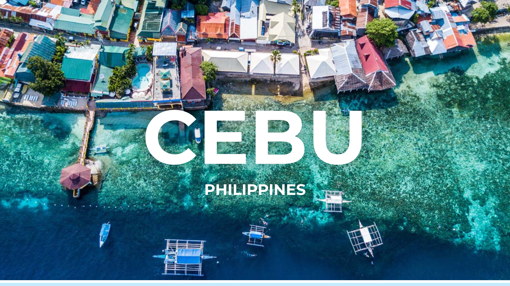

A Quick Listicle of Things to Do
Cebu City, the “Queen City of the South” in the Philippines, is a vibrant hub blending historical charm with modern energy. Explore centuries-old landmarks, pristine beaches, and bustling markets. Dive into rich culture, savor delicious local cuisine (especially the famous Lechon!), and experience warm Filipino hospitality. Whether you’re seeking adventure in nature or a taste of urban life, Cebu offers a diverse and captivating experience.
1. Step Back in Time
Visit historical landmarks like Magellan’s Cross and the Basilica del Santo Niño, the oldest church in the Philippines. Explore Fort San Pedro, a triangular bastion fort with centuries of history.
2. Immerse in Culture
Wander through the Heritage of Cebu Monument showcasing key historical events. Explore the well-preserved Yap-Sandiego Ancestral House for a glimpse into the past. Discover the spiritual ambiance of the Cebu Taoist Temple with its panoramic city views.
3. Chase Waterfalls
Discover the pristine white-sand beaches and vibrant marine life of nearby islands like Malapascua (famous for thresher sharks), Bantayan Island, and Sumilon Island with its stunning sandbar.
4. Island Hop
Discover the pristine white-sand beaches and vibrant marine life of nearby islands like Malapascua (famous for thresher sharks), Bantayan Island, and Sumilon Island with its stunning sandbar.
5. Dive and Snorkel
Cebu is a renowned diving destination. Explore the diverse underwater world around Mactan Island, Moalboal (famous for the sardine run and sea turtles), and Malapascua.
6. Enjoy the Views
Head to Tops Lookout for breathtaking panoramic views of Cebu City and Mactan Island, especially beautiful at sunset.
7. Go on an Adventure

Hike up to Osmeña Peak, the highest point in Cebu, for stunning mountain views.
8. Experience City Life

Explore the bustling Carbon Market for a local experience or enjoy shopping and dining at modern malls like Ayala Center Cebu and SM Seaside City Cebu.
9. Encounter Wildlife

Swim with gentle giant whale sharks in Oslob (though ethical concerns exist, so research responsible tour operators). Visit the Jumalon Butterfly Sanctuary & Art Gallery.
10. Savor Local Flavors

Don’t miss trying Cebu’s famous Lechon (roasted pig) and other local delicacies.